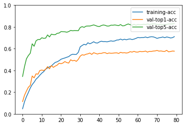

Python 3.5.2 (default, Oct 8 2019, 13:06:37)
Type "copyright", "credits" or "license" for more information.
IPython 7.5.0 -- An enhanced Interactive Python.
Restarting kernel...
ERROR:root:Invalid alias: The name clear can't be aliased because it is another magic command.
ERROR:root:Invalid alias: The name more can't be aliased because it is another magic command.
ERROR:root:Invalid alias: The name less can't be aliased because it is another magic command.
ERROR:root:Invalid alias: The name man can't be aliased because it is another magic command.
In [1]: runfile('/home/hp/lcx/Action-Recognition/test_model.py', wdir='/home/hp/lcx/Action-Recognition')
Load 9537 training samples.
[19:00:26] src/operator/nn/./cudnn/./cudnn_algoreg-inl.h:97: Running performance tests to find the best convolution algorithm, this can take a while... (set the environment variable MXNET_CUDNN_AUTOTUNE_DEFAULT to 0 to disable)
[Epoch 0] train=0.046975 loss=4.338789 time: 987.301536
[Epoch 0] val top1 =0.113402 top5=0.344171 val loss=4.009539
[Epoch 1] train=0.111565 loss=3.793679 time: 761.203559
[Epoch 1] val top1 =0.171557 top5=0.434576 val loss=3.500719
[Epoch 2] train=0.158436 loss=3.491029 time: 766.032447
[Epoch 2] val top1 =0.210151 top5=0.506476 val loss=3.333617
[Epoch 3] train=0.196498 loss=3.272187 time: 844.735676
[Epoch 3] val top1 =0.244779 top5=0.536611 val loss=3.139329
[Epoch 4] train=0.238125 loss=3.059589 time: 861.434799
[Epoch 4] val top1 =0.262490 top5=0.558023 val loss=3.035765
[Epoch 5] train=0.269686 loss=2.890127 time: 742.745538
[Epoch 5] val top1 =0.348929 top5=0.644726 val loss=2.759519
[Epoch 6] train=0.291496 loss=2.770657 time: 766.922575
[Epoch 6] val top1 =0.331219 top5=0.621993 val loss=2.756002
[Epoch 7] train=0.319283 loss=2.660281 time: 834.835976
[Epoch 7] val top1 =0.368755 top5=0.672218 val loss=2.533308
[Epoch 8] train=0.335640 loss=2.569434 time: 912.472165
[Epoch 8] val top1 =0.365054 top5=0.684113 val loss=2.563615
[Epoch 9] train=0.356401 loss=2.466637 time: 836.376197
[Epoch 9] val top1 =0.399683 top5=0.683849 val loss=2.433343
[Epoch 10] train=0.374961 loss=2.391313 time: 850.843891
[Epoch 10] val top1 =0.403119 top5=0.700502 val loss=2.411360
[Epoch 11] train=0.388906 loss=2.339333 time: 1001.502213
[Epoch 11] val top1 =0.399154 top5=0.694951 val loss=2.365661
[Epoch 12] train=0.411765 loss=2.238966 time: 819.166204
[Epoch 12] val top1 =0.409199 top5=0.696801 val loss=2.329368
[Epoch 13] train=0.422460 loss=2.196372 time: 805.406368
[Epoch 13] val top1 =0.434840 top5=0.726408 val loss=2.229070
[Epoch 14] train=0.433155 loss=2.144472 time: 802.373585
[Epoch 14] val top1 =0.414750 top5=0.707904 val loss=2.324022
[Epoch 15] train=0.440809 loss=2.094290 time: 846.045294
[Epoch 15] val top1 =0.444356 top5=0.733545 val loss=2.177223
[Epoch 16] train=0.458635 loss=2.043071 time: 864.780864
[Epoch 16] val top1 =0.427967 top5=0.728787 val loss=2.267275
[Epoch 17] train=0.473629 loss=1.974802 time: 820.094953
[Epoch 17] val top1 =0.439598 top5=0.728787 val loss=2.204575
[Epoch 18] train=0.479186 loss=1.938502 time: 827.248368
[Epoch 18] val top1 =0.448586 top5=0.740946 val loss=2.170352
[Epoch 19] train=0.489252 loss=1.908517 time: 805.404627
[Epoch 19] val top1 =0.465768 top5=0.743590 val loss=2.116174
[Epoch 20] train=0.502674 loss=1.865925 time: 769.180053
[Epoch 20] val top1 =0.461538 top5=0.756807 val loss=2.060971
[Epoch 21] train=0.509175 loss=1.834765 time: 783.389970
[Epoch 21] val top1 =0.467883 top5=0.756014 val loss=2.063836
[Epoch 22] train=0.514418 loss=1.821024 time: 855.171688
[Epoch 22] val top1 =0.481364 top5=0.755485 val loss=2.038399
[Epoch 23] train=0.521128 loss=1.770862 time: 822.218908
[Epoch 23] val top1 =0.472112 top5=0.750991 val loss=2.061634
[Epoch 24] train=0.526895 loss=1.746810 time: 782.069917
[Epoch 24] val top1 =0.467618 top5=0.757335 val loss=2.070738
[Epoch 25] train=0.541051 loss=1.707450 time: 777.084951
[Epoch 25] val top1 =0.498017 top5=0.767380 val loss=1.948867
[Epoch 26] train=0.548600 loss=1.671033 time: 752.256844
[Epoch 26] val top1 =0.488237 top5=0.764737 val loss=2.014692
[Epoch 27] train=0.547447 loss=1.653927 time: 762.874819
[Epoch 27] val top1 =0.492731 top5=0.766059 val loss=1.974250
[Epoch 28] train=0.547447 loss=1.673148 time: 740.666408
[Epoch 28] val top1 =0.483214 top5=0.765794 val loss=2.024379
[Epoch 29] train=0.566216 loss=1.590611 time: 730.608523
[Epoch 29] val top1 =0.501718 top5=0.765266 val loss=1.983234
[Epoch 30] train=0.616966 loss=1.410699 time: 711.079715
[Epoch 30] val top1 =0.531324 top5=0.794872 val loss=1.806375
[Epoch 31] train=0.629443 loss=1.328898 time: 706.246125
[Epoch 31] val top1 =0.544277 top5=0.802538 val loss=1.765502
[Epoch 32] train=0.640138 loss=1.304421 time: 695.382010
[Epoch 32] val top1 =0.540312 top5=0.795929 val loss=1.787921
[Epoch 33] train=0.634581 loss=1.307865 time: 662.241802
[Epoch 33] val top1 =0.548506 top5=0.806767 val loss=1.771091
[Epoch 34] train=0.654294 loss=1.261588 time: 670.077360
[Epoch 34] val top1 =0.552472 top5=0.808353 val loss=1.762562
[Epoch 35] train=0.644752 loss=1.249633 time: 702.912925
[Epoch 35] val top1 =0.559609 top5=0.808353 val loss=1.731666
[Epoch 36] train=0.652826 loss=1.241626 time: 671.064098
[Epoch 36] val top1 =0.547185 top5=0.813111 val loss=1.710839
[Epoch 37] train=0.663626 loss=1.229151 time: 630.417851
[Epoch 37] val top1 =0.563045 top5=0.818662 val loss=1.701060
[Epoch 38] train=0.653665 loss=1.245094 time: 630.795502
[Epoch 38] val top1 =0.556437 top5=0.812583 val loss=1.714937
[Epoch 39] train=0.651882 loss=1.241482 time: 621.944915
[Epoch 39] val top1 =0.550886 top5=0.805710 val loss=1.730732
[Epoch 40] train=0.662263 loss=1.217734 time: 614.664645
[Epoch 40] val top1 =0.556965 top5=0.803595 val loss=1.706385
[Epoch 41] train=0.668554 loss=1.187136 time: 617.949556
[Epoch 41] val top1 =0.556701 top5=0.812583 val loss=1.700686
[Epoch 42] train=0.664465 loss=1.188896 time: 594.264017
[Epoch 42] val top1 =0.562517 top5=0.817869 val loss=1.674518
[Epoch 43] train=0.664884 loss=1.213556 time: 580.119561
[Epoch 43] val top1 =0.563045 top5=0.814697 val loss=1.685181
[Epoch 44] train=0.663102 loss=1.204059 time: 597.883060
[Epoch 44] val top1 =0.554586 top5=0.807824 val loss=1.744676
[Epoch 45] train=0.667191 loss=1.174983 time: 587.051437
[Epoch 45] val top1 =0.560137 top5=0.808353 val loss=1.729239
[Epoch 46] train=0.671805 loss=1.177746 time: 575.224134
[Epoch 46] val top1 =0.557494 top5=0.816019 val loss=1.686412
[Epoch 47] train=0.668135 loss=1.191110 time: 554.898085
[Epoch 47] val top1 =0.558551 top5=0.815490 val loss=1.707406
[Epoch 48] train=0.671175 loss=1.178589 time: 540.379203
[Epoch 48] val top1 =0.561195 top5=0.818134 val loss=1.681170
[Epoch 49] train=0.679144 loss=1.163625 time: 529.008571
[Epoch 49] val top1 =0.561723 top5=0.814962 val loss=1.658590
[Epoch 50] train=0.680507 loss=1.145118 time: 529.549927
[Epoch 50] val top1 =0.555908 top5=0.812054 val loss=1.704257
[Epoch 51] train=0.688162 loss=1.123836 time: 518.336620
[Epoch 51] val top1 =0.566217 top5=0.821835 val loss=1.681347
[Epoch 52] train=0.680298 loss=1.135737 time: 521.096485
[Epoch 52] val top1 =0.561459 top5=0.809939 val loss=1.718296
[Epoch 53] train=0.686799 loss=1.114589 time: 519.638127
[Epoch 53] val top1 =0.563045 top5=0.811525 val loss=1.707817
[Epoch 54] train=0.681556 loss=1.129056 time: 510.004256
[Epoch 54] val top1 =0.559873 top5=0.820513 val loss=1.690340
[Epoch 55] train=0.687008 loss=1.110633 time: 508.876650
[Epoch 55] val top1 =0.563045 top5=0.827386 val loss=1.670987
[Epoch 56] train=0.689210 loss=1.121372 time: 497.606789
[Epoch 56] val top1 =0.572561 top5=0.820248 val loss=1.661093
[Epoch 57] train=0.683758 loss=1.130518 time: 483.234990
[Epoch 57] val top1 =0.568332 top5=0.815226 val loss=1.695416
[Epoch 58] train=0.687952 loss=1.119379 time: 470.123955
[Epoch 58] val top1 =0.575469 top5=0.824478 val loss=1.651902
[Epoch 59] train=0.694663 loss=1.097468 time: 477.456918
[Epoch 59] val top1 =0.568861 top5=0.815755 val loss=1.672692
[Epoch 60] train=0.702632 loss=1.067564 time: 486.178642
[Epoch 60] val top1 =0.568332 top5=0.823156 val loss=1.657504
[Epoch 61] train=0.700535 loss=1.066093 time: 480.290740
[Epoch 61] val top1 =0.574941 top5=0.819455 val loss=1.655153
[Epoch 62] train=0.702003 loss=1.039045 time: 479.631137
[Epoch 62] val top1 =0.572033 top5=0.821306 val loss=1.652773
[Epoch 63] train=0.702317 loss=1.064989 time: 466.507724
[Epoch 63] val top1 =0.573619 top5=0.824478 val loss=1.656222
[Epoch 64] train=0.707350 loss=1.048038 time: 471.011420
[Epoch 64] val top1 =0.577848 top5=0.821570 val loss=1.652003
[Epoch 65] train=0.700849 loss=1.062060 time: 479.415891
[Epoch 65] val top1 =0.568332 top5=0.827121 val loss=1.637514
[Epoch 66] train=0.706931 loss=1.052857 time: 532.644809
[Epoch 66] val top1 =0.575205 top5=0.823156 val loss=1.640733
[Epoch 67] train=0.709867 loss=1.031892 time: 549.797055
[Epoch 67] val top1 =0.574676 top5=0.825535 val loss=1.646551
[Epoch 68] train=0.708609 loss=1.054619 time: 541.361055
[Epoch 68] val top1 =0.577848 top5=0.829236 val loss=1.630061
[Epoch 69] train=0.702842 loss=1.051060 time: 540.089827
[Epoch 69] val top1 =0.579434 top5=0.827121 val loss=1.645884
[Epoch 70] train=0.694558 loss=1.080793 time: 528.737066
[Epoch 70] val top1 =0.583664 top5=0.822363 val loss=1.641545
[Epoch 71] train=0.700115 loss=1.064583 time: 528.640736
[Epoch 71] val top1 =0.577320 top5=0.820248 val loss=1.649630
[Epoch 72] train=0.702737 loss=1.074250 time: 530.373658
[Epoch 72] val top1 =0.579170 top5=0.825007 val loss=1.640090
[Epoch 73] train=0.707455 loss=1.062432 time: 491.817950
[Epoch 73] val top1 =0.575469 top5=0.819455 val loss=1.626817
[Epoch 74] train=0.700849 loss=1.068673 time: 467.166464
[Epoch 74] val top1 =0.574676 top5=0.817341 val loss=1.657521
[Epoch 75] train=0.707560 loss=1.057337 time: 479.509082
[Epoch 75] val top1 =0.584721 top5=0.822628 val loss=1.642323
[Epoch 76] train=0.703890 loss=1.047619 time: 479.160733
[Epoch 76] val top1 =0.570975 top5=0.827121 val loss=1.659065
[Epoch 77] train=0.698543 loss=1.074054 time: 458.032623
[Epoch 77] val top1 =0.573883 top5=0.826328 val loss=1.636785
[Epoch 78] train=0.701164 loss=1.063391 time: 454.086473
[Epoch 78] val top1 =0.578113 top5=0.828179 val loss=1.637824
[Epoch 79] train=0.710601 loss=1.052595 time: 454.046571
[Epoch 79] val top1 =0.576791 top5=0.830558 val loss=1.606278

In [2]: